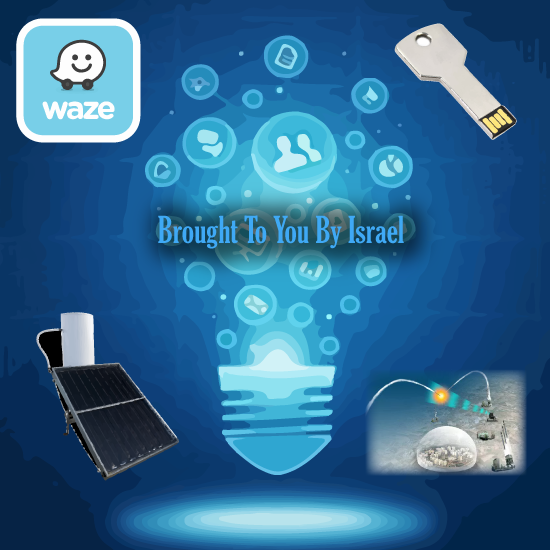

|

|
לכבוד חגיגות ה-70 למדינת ישראל הייתה תחרות עיצוב כרזות מטעם עמותת ACT.IL.
הקונספט העיצוב שבחרתי מתייחס לישראל כמעצמת סטארט-אפים.
בכרזה מוצגות המצאות וטכנולוגיות ישראליות ששינו את העולם כגון דיסק און קי, דוד שמש, טפטפת וכיפת ברזל.
מטרת הכרזה היא להציג את היצירתיות והחדשנות שהנן מאפיינים בולטים מאוד במדינת ישראל.
בחידוש שביצענו ליצירה בחרנו להציג דמות של ילד מודרני, אשר עיניו חסומות על ידי סמארטפון המשקף את "דור המסכים".
בנוסף לכך, בחרנו לשלב את אלמנט התנועה שקיים בתמונה המקורית.
|